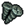

Steel Smithing
Steel Smithing is a technology in the Metallurgy Tech Tree.
Unlocks
 Steel Screws |
Steel Anvil |
Lantern II |
Next technologies
- Reinforced Barricades
- Steel Instruments I
- Steel Instruments II
- Steel Casting
Template:Metallurgy navbox